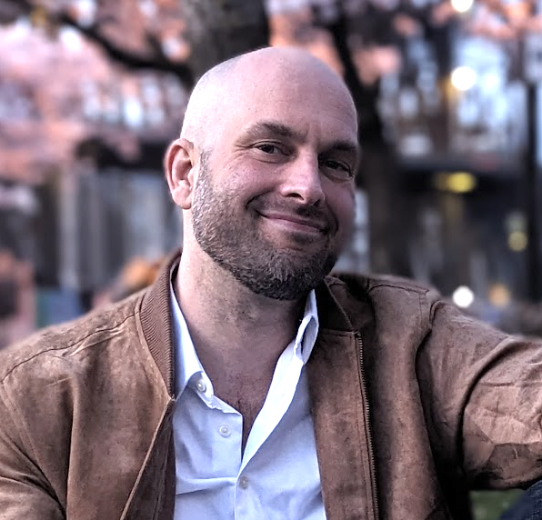

Tristan Day
AI Alignment Researcher · Research Fellow, CBAI · Cambridge, MA
I study what language models represent about themselves: metacognition, persona structure, and indicators of consciousness using mechanistic interpretability.

I'm an AI alignment researcher and Research Fellow at the Cambridge Boston Alignment Initiative (CBAI). My work asks when a model's self-reports and persona-dependent behavior reflect shallow stylistic patterns versus deeper internal representations, studied through behavorial experiments and mechanistic interpretability.
I'm currently based in Cambridge, MA and take part in groups such as the Harvard AI Safety Student Team (AISST). My current CBAI work is in collaboration with mentor Laura Ruis (UCL/MIT), and collaborators Belinda Li (MIT / Anthropic) and Dmitrii Troitskii (CBAI). I recently worked with SPAR mentor Christopher Ackerman to investigate latent metacognitive capability in language models.
My background spans the bredth of cognitive science: computational neuroscience, complexity science, psychology, and philosophy of mind.
Outside of research, I enjoy meditation, philosophy, occasionally making music, and travel. I've been to 17 countries so far.
Mechanistic interpretability · LLM metacognition · persona representations · AI consciousness indicators · computational neuroscience
A mechanistic-interpretability investigation into persona representation and cross-persona privileged access in language models. Using Llama 3.1 8B and Dolphin 2.8 24B Mistral, I study how persona identity is represented across the network. Preliminary analyses suggest persona identity is linearly separable in early layers, with mid-layer activation divergence consistent with persona-dependent representational differences. Methods: linear probes, CKA/SVCCA/Procrustes, activation patching, logit lens, and SelfIE/Patchscopes.
An investigation into whether LLMs contain pre-existing internal structure supporting self-evaluation of answer uncertainty, and whether fine-tuning routes (rather than installs) this structure into confidence reports. Accepted to the ICML 2026 Mechanistic Interpretability Workshop.
Operationalizing indicators of consciousness into properties that can be evaluated in current AI systems, building on the Butlin–Long et al. indicator framework. Scoping candidate tests for properties such as world modeling, self-modeling, metacognition, and valenced states. In collaboration with Chris Percy.
Leading an international computational-neuroscience collaboration analyzing University of Oxford diffusion-MRI data to characterize changing brain-network structure over the lifespan, using spectral graph methods.
Teaching Assistant, Advanced Neurophysiological Psychology (400-level), Portland State University, 2019. Science-outreach educator with Northwest Noggin, 2017–2021, teaching neuroscience to K–12 students and adults in schools, public science events, and correctional facilities. Poster presenter, Society for Neuroscience Annual Meeting, 2018 and 2019.
I also have a long-standing interest in contemplative traditions and philosophy of mind, including meditation practice and Buddhist thought. I have completed a 10-day silent Vipassana meditation and several other multi-day retreats in the Theravada and Tibetan Buddhist traditions.
Exploratory, coursework, and competition projects.
Neuro-symbolic approaches to ARC-style reasoning tasks, combining learned pattern recognition with explicit rule extraction to probe limitations of current reasoning systems.
Preliminary ML components for EEG seizure classification (Kaggle), including transformer and VAE-inspired approaches to Fourier-transformed time-series data.
Connected representation analysis (Procrustes, PCA, clustering) to questions about substrate independence and computational theories of mind.
Replicated biologically inspired spiking-neural-network methods for image classification.
Implemented and trained a deep reinforcement learning agent for Atari-style environments.
End-to-end data pipeline (Kafka, cloud infrastructure, PostgreSQL, map visualization) for public-transit data.
Replicated aspects of an early text-to-image architecture using variational autoencoders, shortly after the original work appeared.
NetLogo agent-based model of incentive dynamics and pro-environmental behavior.